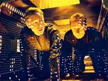
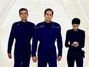
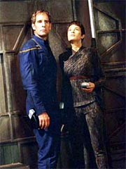

|
MANCHETE
DO EPISDIO
Continuidade
e bom uso de premissa
sci-fi garantem episdio campeo
Episdio
anterior | Prximo
episdio
Sinopse:
A Enterprise ainda est se recuperando dos danos sofridos durante o encontro com os Romulanos. Trip e Archer usam um pod de inspeo para verificar os danos no casco e descobrem que seus problemas esto alm das possibilidades de reparos e limitam a capacidade da Enterprise de vo em dobra, isolando-a das bases terrestres mais prximas. Archer decide ento, relutantemente, fazer um pedido de socorro para qualquer nave na regio.
Enquanto isso, Reed est na enfermaria fazendo fisioterapia para recuperar os movimentos de sua perna, ferida durante o encontro com uma mina Romulana. O tenente informado por Phlox de que seu tratamento ainda o tiraria do servio por uma ou duas semanas.
Felizmente, a ajuda vem depressa. Um cargueiro Telarita no alcance das comunicaes abre um canal e informa a Enterprise de que h uma estao prxima que pode efetuar os reparos. Sem opo, Archer decide seguir o conselho Telarita e encaminhar a nave para as referidas coordenadas.
Chegando l, a Enterprise no consegue contatar ningum na estao, que tem uma atmosfera interior de nitrognio lquido e temperatura pouco acima do zero absoluto. Archer j est desesperanoso quanto possibilidade de obter reparos, mas a estao dispara um raio-sonda na direo da Enterprise e milagrosamente comea a se adaptar para receber os tripulantes humanos. Ela alarga sua baa de atracao para que a Enterprise possa se aproximar e troca sua atmosfera por uma de oxignio-nitrognio e temperatura ambiente.
 A Enterprise atraca e Archer, Trip e T'Pol vo a bordo da estao. L eles encontram um ambiente estril e nenhum ser vivo -- o complexo parece ser todo automtico. Uma tela de computador, em ingls, apresenta um relatrio completo dos danos da Enterprise, incluindo os do tenente Reed, e sugere que os reparos poderiam ser completados em pouco mais de um dia -- dezenas de vezes menos do que levaria para o trabalho ser feito por tripulaes humanas numa base espacial.
Em troca, Archer precisa escolher a forma de pagamento -- uma dentre trs opes bastante razoveis e pouco custosas para a Enterprise. O capito acaba escolhendo ceder 200 litros de plasma de dobra, mas comea a ficar desconfiado. A estao comunica que os reparos sero iniciados e que todo o pessoal deve ser evacuado das sees danificadas. Enquanto isso, eles podem ocupar a sala de recreaes da estao, com mesas equipadas com replicadores.
Archer retorna nave e est cada vez mais incomodado com a situao -- depois de mais de um ano no espao, o capito fica cada vez mais ctico quando encontra situaes de filantropia aliengena. Mas os reparos continuam conforme o planejado. Enquanto isso, na estao, Trip est intrigado com o poder computacional da estao e quer saber o que a faz "pensar". Ele convence Reed a se infiltrar com ele pelas tubulaes para atingir o ncleo do computador da estao. A transgresso entretanto ativa um alarme, e a estao automaticamente transporta os invasores de volta ponte da Enterprise.
Enquanto isso, Mayweather, em seus aposentos, recebe um chamado aparentemente de Archer, pedindo que o encontre na baa 1. Travis pergunta ao capito se aquela no uma das reas restritas pelos reparos, mas a voz de Archer diz que no mais. O alferes segue as instrues.
De volta ao comando, Archer passa uma reprimenda em Trip e Reed, chegando a ordenar que fiquem ambos restritos a seus alojamentos, quando interrompido por Phlox, chamando-o com urgncia na baa 1. L, ele informa o capito de que Travis est morto, aparentemente atingido por um disparo vindo de um dos painis na parede, em razo dos reparos sendo ali conduzidos. O capito est desolado pela morte de Travis e intrigado pelo fato de ele ter desobedecido ordem de ficar longe das reas em reparos. Ele pede que Reed investigue os aposentos do piloto, procura de pistas, mas o tenente no descobre nada.
A evidncia acaba vindo de Phlox, enquanto faz a autpsia de Travis. Aps ser interrompido por Hoshi, que queria se despedir do colega morto, o doutor descobre que pequenos organismos que faziam parte de uma vacina recentemente inoculados em todos os tripulantes estavam mortos no corpo de Travis, algo que no deveria ter acontecido com a morte do oficial. Phlox imediatamente comunica a Archer sua descoberta, afirmando que o corpo na enfermaria no Travis, mas uma cpia muito bem feita.
 O capito ento convoca Reed e Trip para saber o que eles descobriram ao invadir a rea restrita da estao. Os dois falam que aprenderam muito pouco, pois foram transportados a alguns metros de atingir o ncleo do computador. Archer pergunta a Reed se ele conseguiria desativar o alarme que os transportou para fora, e o oficial de armamentos diz que sim.
Os dois e T'Pol ento voltam estao, enquanto Trip vai entregar o pagamento -- os 200 litros de plasma de dobra. O engenheiro tenta enrolar ao mximo a concluso do negcio, reclamando dos servios da estao, enquanto Reed volta a ativar o alarme e teletransportado para a ponte. Mas dessa vez Archer e T'Pol esto com ele e usam suas pistolas de fase para desativar o sistema.
A dupla ento invade o ncleo do computador, descobrindo toda a verdade -- o sistema todo alimentado pelas mentes de diversos aliengenas, conectados em rede e ampliando a capacidade computacional da estao. Travis foi a ltima aquisio da estao, mas os demais esto por muito tempo l para serem salvos. Archer e T'Pol levam Travis dali, embora a estao ameace danificar a Enterprise.
Trip deixa l os 200 litros de plasma, mas com uma surpresa -- um explosivo acoplado por Reed aos contineres. Archer e T'Pol esto de volta com Travis e Malcolm aciona o explosivo, fazendo com que toda a estao comece a entrar em colapso. Com a ajuda de torpedos para livrar a nave dos braos mecnicos da estao, a Enterprise consegue fugir. Mas nem toda a destruio proporcionada pela exploso foi capaz de terminar com a estao, que, depois que a Enterprise partiu, iniciou o processo de auto-reparao.
Comentrios:
"Dead Stop" o primeiro episdio da segunda temporada que realmente sobrevive s expectativas. Isso porque ele alia trs elementos vencedores de forma bastante convincente. O primeiro deles a continuidade -- o fato de a Enterprise ter sido seriamente no episdio anterior e ainda precisar de reparos nesse digno de nota. O segundo a premissa da srie -- lembrar constantemente o fato de que essa nave a primeira da Terra a estar realmente "l fora" e de que ela depende de seus prprios meios para garantir sua sobrevivncia. O terceiro fazer bom uso de um belo tema para um episdio de fico cientfica.
incrvel como no preciso solues mirabolantes para fazer um episdio de
Enterprise brilhar. Basta seguir a lgica da prpria srie para descobrir onde esto as fontes da sua fora. Tome por exemplo o comecinho do episdio, em que Archer e Trip esto verificando os danos no casco da nave. Quando o engenheiro revela ao capito que eles no tm a menor chance de fazer os reparos e seguir viagem, ou mesmo voltar Terra, Archer se v numa posio absolutamente singular para um protagonista de
Jornada nas Estrelas: ele obrigado a enviar um pedido de socorro.
Ao longo de todas as sries da franquia, cansamos de ver os oficiais da Frota Estelar respondendo a pedidos de socorro de outras naves. Mas foi muito raro vermos a principal nave daquela srie pedindo ajuda. E certamente nunca vimos algo nessas circunstncias. Nas raras ocasies em que Picard ou Kirk pediam socorro, eles sempre tinham a quem chamar: seja o Comando da Frota Estelar, ou uma nave amiga nas redondezas. Aqui Archer precisa enviar um pedido de socorro geral, a qualquer nave na regio. Depois de mais de um ano sofrendo no espao, vemos toda a angstia do capito em dar essa ordem -- poderia muito bem aparecer uma nave Suliban ou Klingon pronta para dar o golpe de misericrdia na Enterprise, em vez de ajud-la.
E de onde veio tudo isso? Do uso correto, coerente e responsvel da premissa da srie. E os parabns vo todos para Mike Sussman e Phyllis Strong, os roteiristas.
Tambm h de se parabenizar o excelente uso da continuidade aplicado aqui. um grande alvio vermos que os danos na Enterprise no sumiram por mgica depois de
"Minefield", e melhor ainda quando vemos que mesmo Malcolm Reed no est recuperado de seu encontro com a mina Romulana. De quebra, temos referncias no episdio ao piloto
"Broken Bow" e ao episdio
"Fight or Flight", mostrando que a dupla de roteiristas sabe mesmo sobre o que est escrevendo. E para completar, mais uma referncia Telarita (que devem dar as caras ainda nesta temporada), algo que Sussman e Strong j haviam experimentado em
"Civilization", da temporada passada.
 Para completar a festa, a idia por trs de uma estril estao automatizada que usa crebros para alimentar seu sistema de "computao" , embora no original, muito interessante. Ela j havia sido explorada antes, mas com total incompetncia, no clssico trash da srie original
"Spock's Brain". Mas s aqui, em "Dead Stop", o conceito recebe o tratamento que merece.
Adicionalmente, alguns personagens recebem um tratamento bastante digno. Os destaques vo para a amizade de Trip e Reed ( impressionante como a qumica entre Trinneer e Keating cresce a cada novo episdio), novamente bem colocada e explorada, e para o capito Archer, que mostra tambm no ter esquecido do episdio anterior, quando pega o "certinho" Reed em um ato de flagrante insubordinao.
Os demais personagens recebem o tratamento usual, que no valoriza nem deprecia, exceo do coitado de sempre, Travis Mayweather. A funo do piloto de Enterprise no episdio fundamental: ele se torna o primeiro "camisa vermelha" da srie. E o que pior, est na cara que ele no havia mesmo morrido, ou que seria trazido de volta ao final, de algum modo. Isso tira totalmente o impacto da morte do alferes dentro do episdio, alm de impedir que ele tenha alguma participao importante, ou mesmo algum dilogo minimamente representativo. Pobre Mayweather, usado como "elemento de trama", em vez de "personagem". Alguma coisa realmente est muito errada com a forma com que os produtores esto lidando com ele.
O final do episdio, com o "Resgate do Soldado Mayweather", tambm foi um pouco problemtico. Primeiro, soou um pouco esquisito Archer nem parar para pensar na hora de decidir por tentar salvar outros aliengenas conectados estao. verdade que T'Pol diz que eles provavelmente no teriam salvao, mas Archer no mostra nenhuma dvida ou remorso em ir direto a Mayweather e largar os demais l, intocados. Ademais, a fuga de T'Pol, Archer e Mayweather da estao foi meio rpida demais, considerando que foi feita sem a ajuda de um teletransporte.
Essa ltima crtica, entretanto, deve ser aliviada pelo fato de que ajudou muito a ditar o ritmo frentico do clmax do episdio -- a Enterprise tentando escapar da estao, que estava "furiosa" com a devoluo involuntria de Mayweather.
A sequncia final (assim como o episdio como um todo) conta com espetaculares efeitos especiais, que sem dvida figuram entre os melhores feitos para a srie. E a direo de Roxann Dawson, com algumas tomadas excepcionais (como a em que Archer se revolta com o computador de bordo da estao), valorizou bastante a produo, dando vida e personalidade ao cenrio aparentemente estril do complexo automatizado.
No fim, apesar de algumas pequenas rusgas, "Dead Stop" um excelente episdio, tanto conceitualmente quanto por valor de entretenimento, e deve acabar figurando entre os melhores da temporada.
Citaes:
Phlox - "It's unethical to cause a patient harm. I can inflict as much pain as I like."
(" anti-tico causar mal um paciente. Eu posso infligir quanta dor eu quiser.")
Estao - "Your inquiry was not recognized."
("Sua pergunta no foi reconhecida.")
Tucker - "We're explorers. Where's your spirit of adventure?"
("Somos exploradores. Onde est seu esprito de aventura?")
Reed - "I left it in a Romulan mine field."
("Eu o deixei num campo minado Romulano.")
Archer - "You've made it clear that you think discipline aboard Enterprise has gotten a little too lax -- I'm beginning to agree with you."
("Voc deixou claro que pensa que a disciplina a bordo da Enterprise ficou um pouco frouxa demais -- comeo a concordar com voc.")
Trivia:
 " um episdio incrvel", diz John Billingsley. "Tem essa estao espacial que usada para reparos e estamos desesperadamente procurando algum que nos ajude a consertar a nave, porque estamos muito longe de qualquer instalao
conhecida. Chegamos e ela parece ser computadorizada e ela concorda em consertar a nave. Parece estar fazendo um trabalho memorvel e pedindo muito pouco em troca. E ento, claro, h uma reviravolta misteriosa quando percebemos que algo sinistro est acontecendo!"
" um episdio incrvel", diz John Billingsley. "Tem essa estao espacial que usada para reparos e estamos desesperadamente procurando algum que nos ajude a consertar a nave, porque estamos muito longe de qualquer instalao
conhecida. Chegamos e ela parece ser computadorizada e ela concorda em consertar a nave. Parece estar fazendo um trabalho memorvel e pedindo muito pouco em troca. E ento, claro, h uma reviravolta misteriosa quando percebemos que algo sinistro est acontecendo!"
A diretora, mais uma vez, foi Roxann Dawson. "Acabei de terminar outro episdio de
Enterprise", disse. "Foi sensacional trabalhar nele! Nossa gangue faz um acordo com uma estao de reparos automatizada, que ns descobrimos que tem uma mente prprio. O conceito era timo." Dawson gostou tanto que foi ela mesma quem forneceu a voz estao.
As filmagens comearam em 9 de agosto de 2002 e foram concludas em 20 de agosto. Cenas adicionais foram gravadas em 19 de setembro. Embora esse tenha sido o quinto episdio a ser filmado na temporada, foi o quarto a ser exibido, por ser uma continuao direta de
"Minefield".
Ficha
tcnica:
Escrito por Michael
Sussman & Phyllis Strong
Direo de Roxann Dawson
Exibido em 09/10/2002
Produo:
031
Elenco:
Scott
Bakula como Jonathan Archer
Jolene Blalock como
T'Pol
John Billingsley
como Phlox
Anthony Montgomery
como Travis Mayweather
Connor Trinneer como
Charlie 'Trip' Tucker III
Dominic Keating como
Malcolm Reed
Linda Park como Hoshi Sato
Elenco convidado:
Roxann Dawson como voz da
estao (no-creditada)
Episdio
anterior | Prximo
episdio
|